Typology of charts
Bee swarm plots
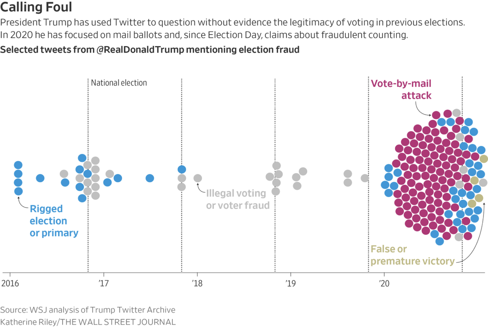
Example 2:
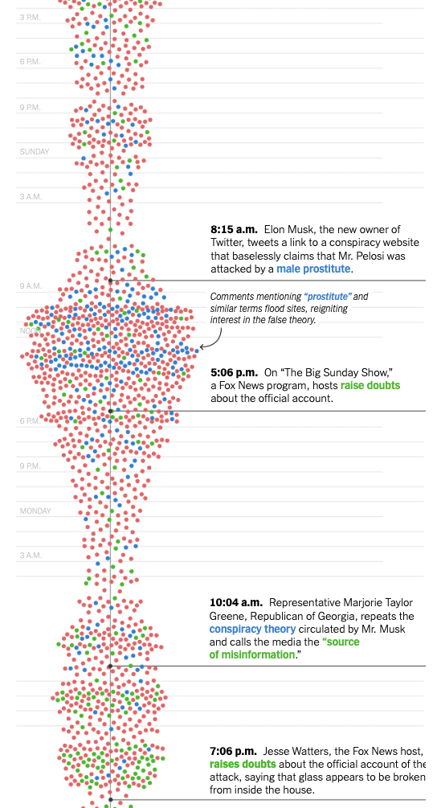
Source: Annie Karni, Malika Khurana and Stuart A. Thompson. How Republicans Fed a Misinformation Loop About the Pelosi Attack.
Grouped bar chart
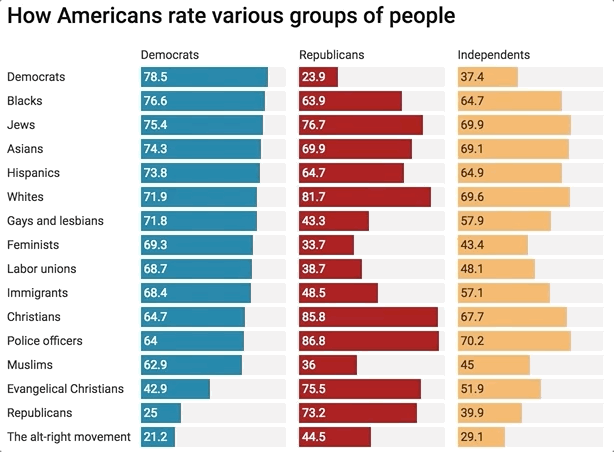
Chart: @janzilinsky; Data: Thermometer ratings from VOTER Survey.
Density plot
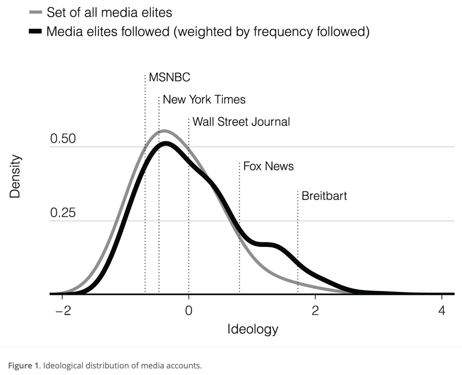
Source: Eady et al. (2019)
Joyplot or ridgeplot
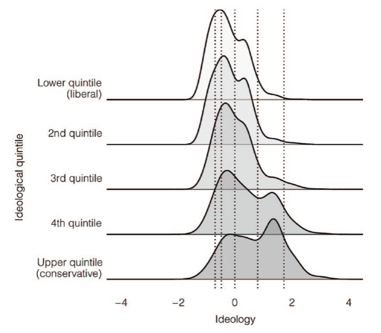
Source: Eady et al. (2019)
Heatmap
Here the cell entries of the number of cases per 100,000 people.
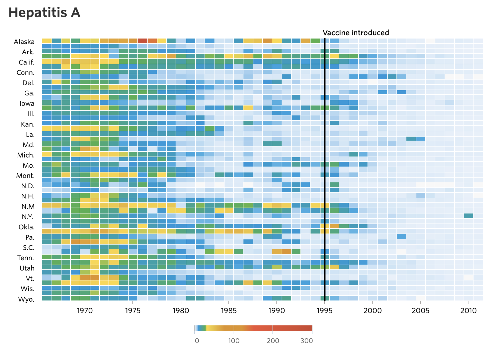
Source: http://graphics.wsj.com/infectious-diseases-and-vaccines/
Maps
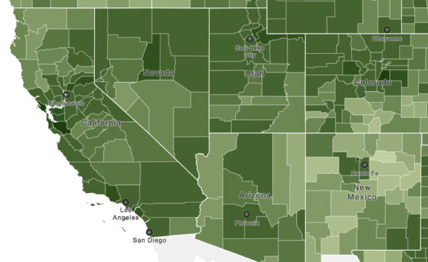
Histograms
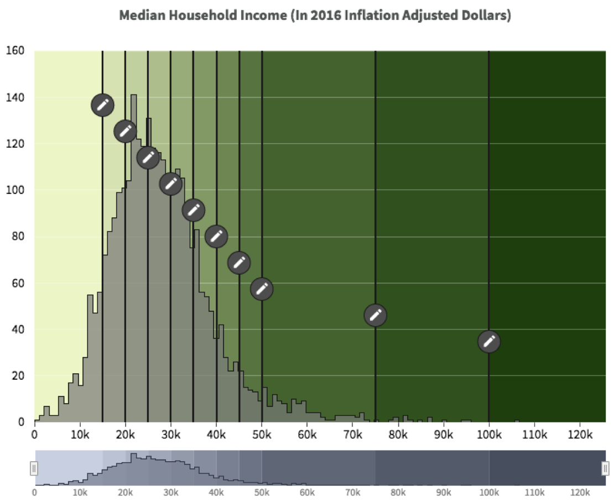
Maps with 2-dimensional color-coding:

Cartogram
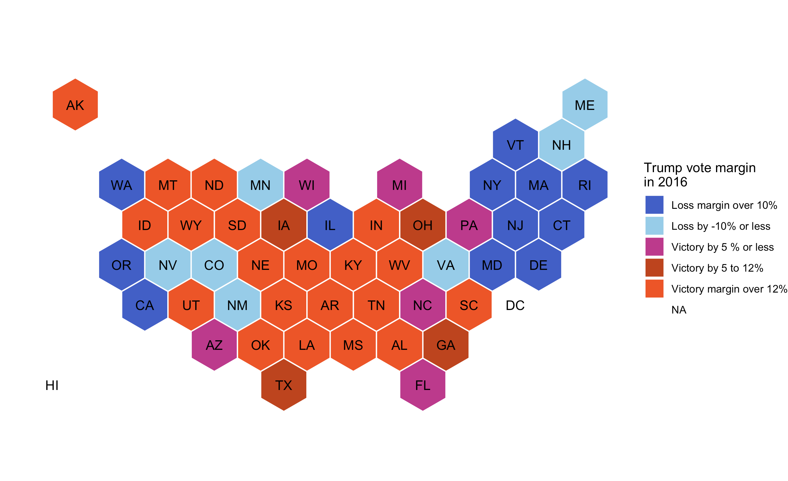
Cartogram or a heatmap?
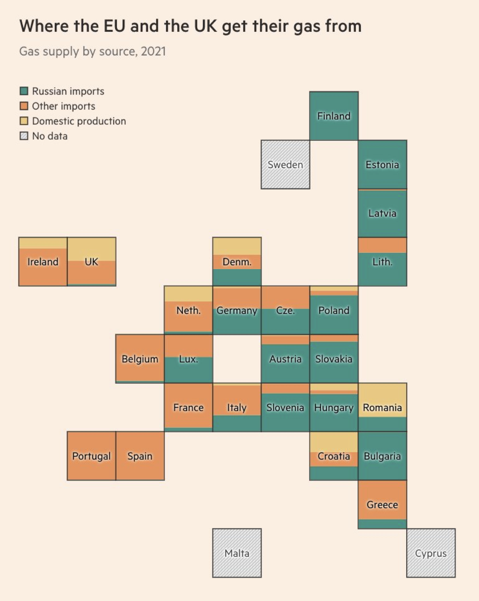
Boxplots
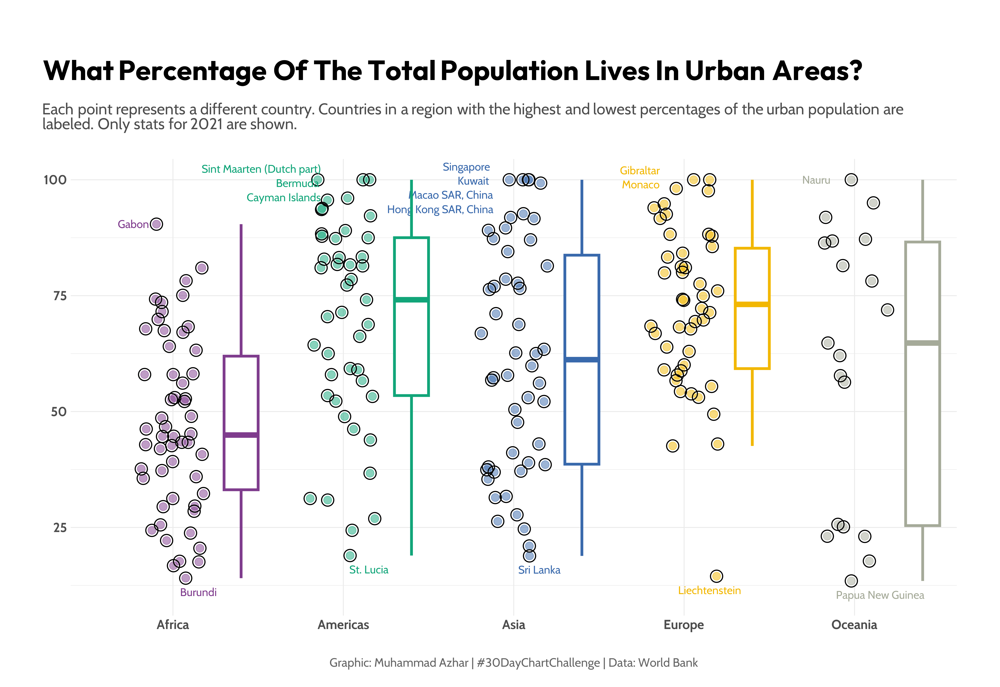
Source: imagineazhar
Types of bar charts
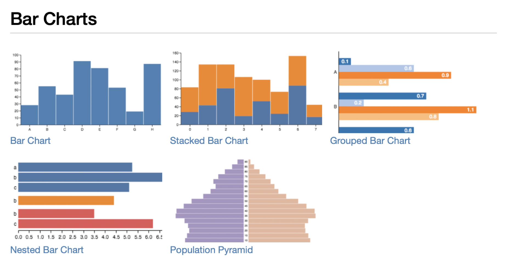
Time series plots
Standard line graphs
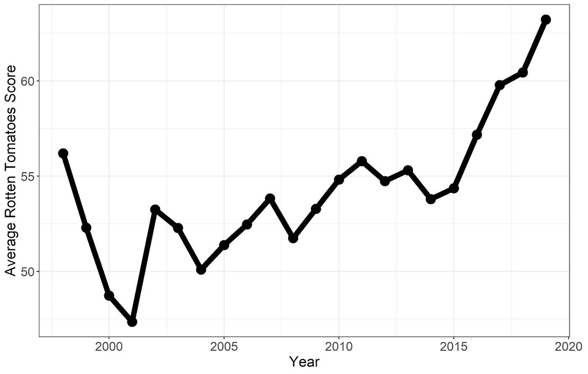
(But ask yourself: would you really believe this “finding”? What was the data-generating process? Are movies and shows really getting better?)
Emphasis on relative changes
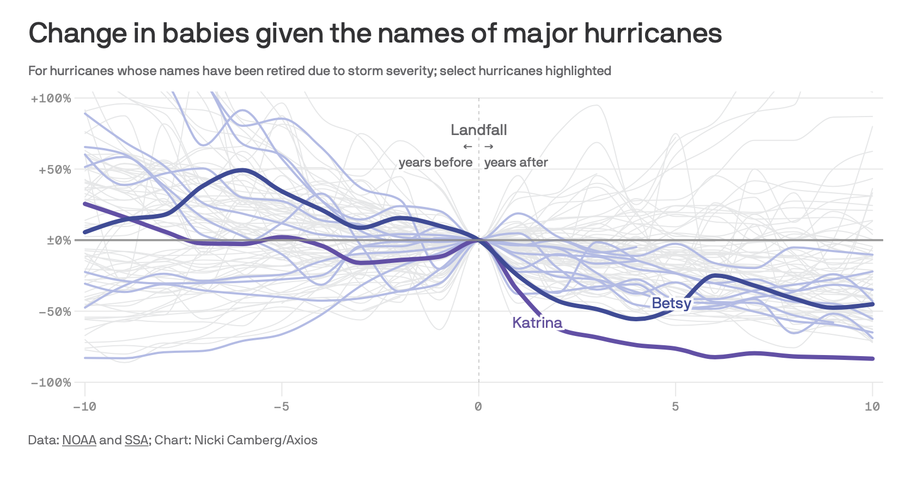
Area chart
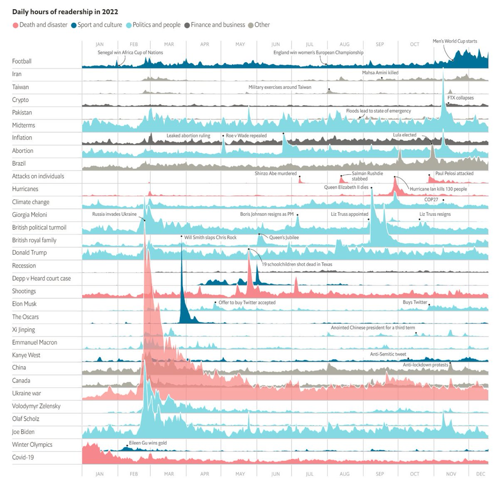
A useful resource is the set of charts shown on this website: https://vega.github.io/vega/examples/